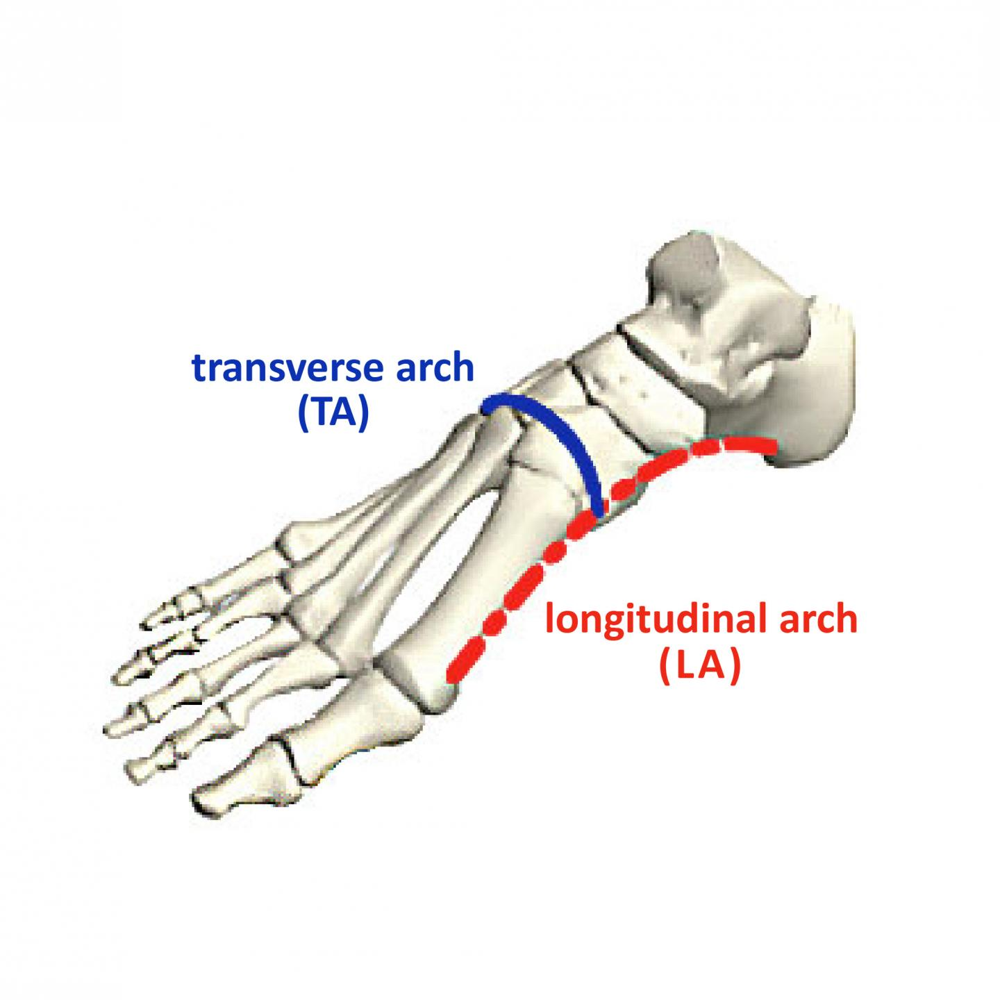

PesPlanus
Detect Foot Deformity Using
Force sensors placed in Shoe Sole


The human foot is a marvel of engineering, designed for both stability and flexibility. One key feature is the arch system
The foot has three arches: two longitudinal (medial and lateral) arches and one anterior transverse arch (Fig.1). They are formed by the tarsal and metatarsal bones, and supported by ligaments and tendons in the foot. Their shape allows them to act in the same way as a spring, bearing the weight of the body and absorbing the shock produced during locomotion. The flexibility conferred to the foot by these arches facilitates functions such as walking and running.
 Fig1– The transverse, medial longitudinal and lateral longitudinal arches of the foot.
Fig1– The transverse, medial longitudinal and lateral longitudinal arches of the foot.
The medial arch is the higher of the two longitudinal arches. It is formed by the calcaneus, talus, navicular, three cuneiforms and first three metatarsal bones. It is supported by: Muscular support: Tibialis anterior and posterior, fibularis longus, flexor digitorum longus, flexor hallucis, and the intrinsic foot muscles Ligamentous support: Plantar ligaments (in particular the long plantar, short plantar and plantar calcaneonavicular ligaments), medial ligament of the ankle joint. Bony support: Shape of the bones of the arch. Other: Plantar aponeurosis.
The lateral arch is the flatter of the two longitudinal arches, and lies on the ground in the standing position. It is formed by the calcaneus, cuboid and 4th and 5th metatarsal bones. It is supported by: Muscular support: Fibularis longus, flexor digitorum longus, and the intrinsic foot muscles. Ligamentous support: Plantar ligaments (in particular the long plantar, short plantar and plantar calcaneonavicular ligaments). Bony support: Shape of the bones of the arch. Other: Plantar aponeurosis.


The transverse arch is located in the coronal plane of the foot. It is formed by the metatarsal bases, the cuboid and the three cuneiform bones. It has: Muscular support: Fibularis longus and tibialis posterior. Ligamentous support: Plantar ligaments (in particular the long plantar, short plantar and plantar calcaneonavicular ligaments) and deep transverse metatarsal ligaments. Other support: Plantar aponeurosis. Bony support: The wedged shape of the bones of the arch.
